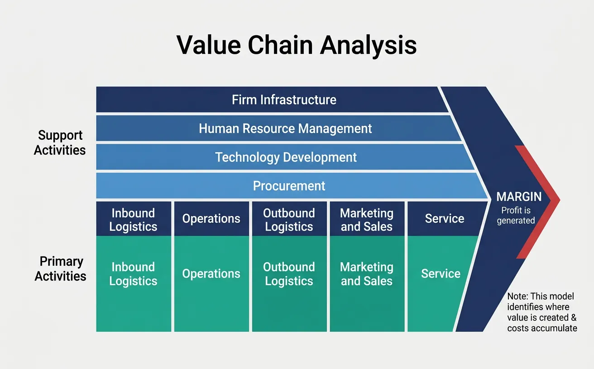
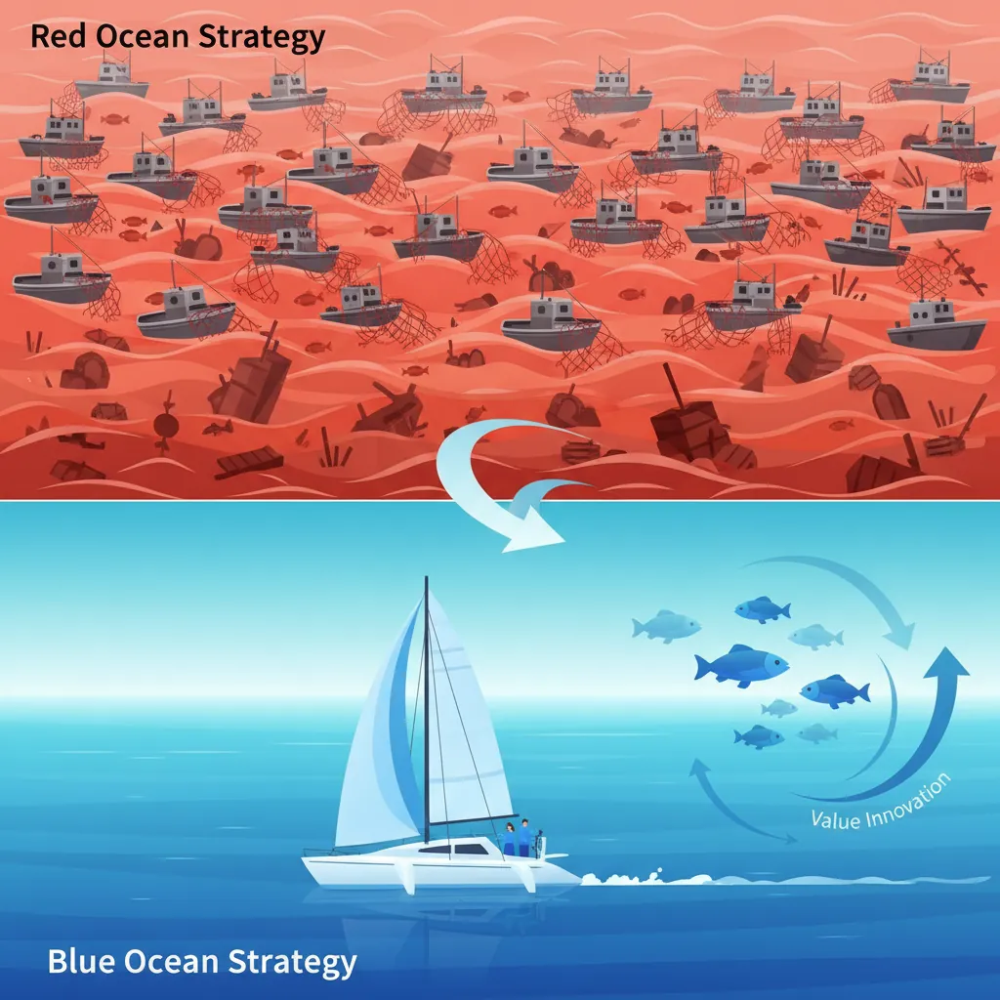
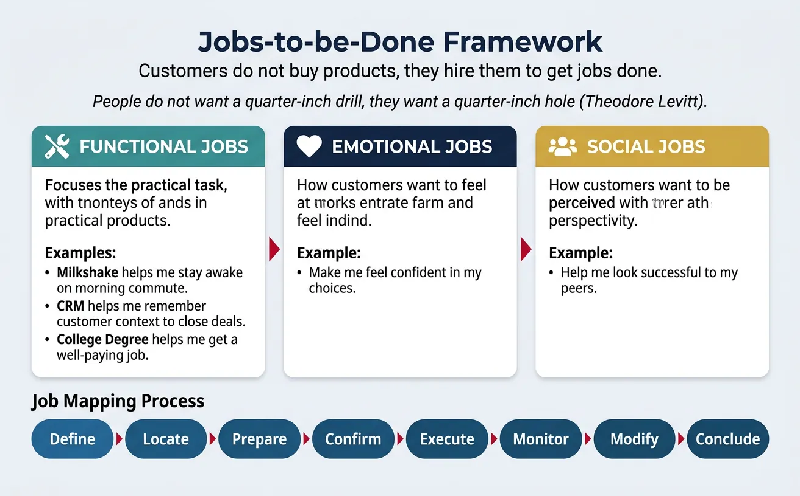
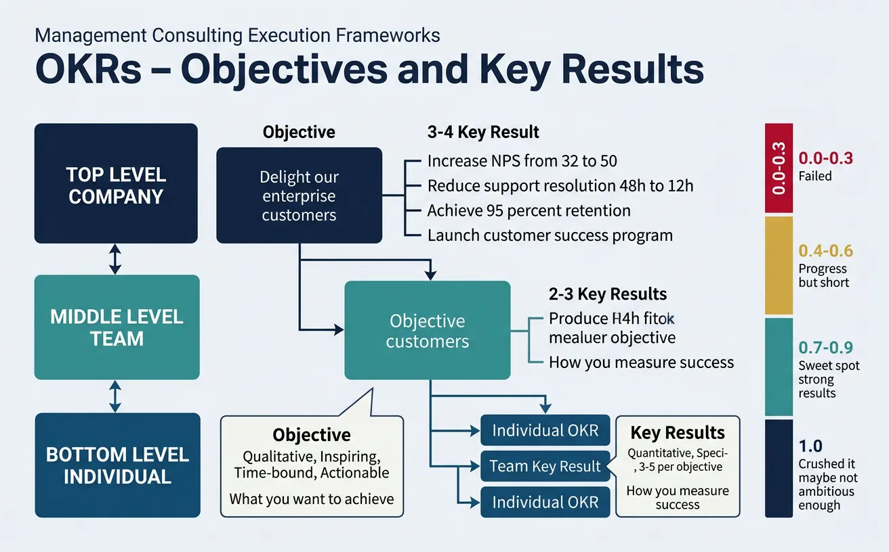
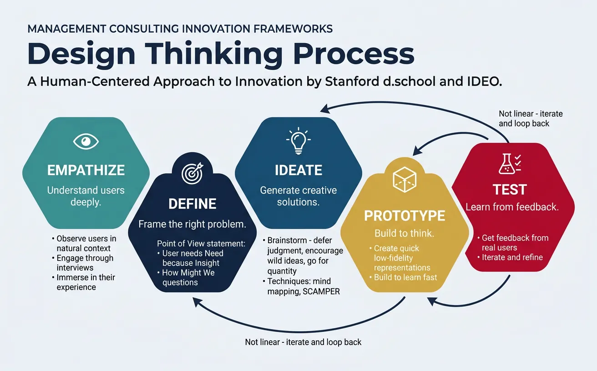

Business Strategy
Structured Problem Solving
Hypothesis-driven thinking, problem structuring, root cause analysisMECE & Issue Trees
Mutually exclusive, collectively exhaustive, logic treesStrategy Frameworks
Porter's Five Forces, SWOT, BCG Matrix, value chainMcKinsey 7S & Organizational Analysis
Structure, strategy, systems, shared values, skillsFinancial Due Diligence
Financial statements, valuation, M&A analysis, modelingClient Communication & Delivery
Pyramid principle, slide design, stakeholder managementAdvanced Frameworks
Blue ocean, disruption theory, scenario planningCase Interview Master Pack (Bonus)
Market sizing, profitability, M&A, pricing casesConsultant Toolkit (Bonus)
Templates, checklists, presentation frameworksKey Insight
Beyond the classics, advanced frameworks help consultants tackle innovation, transformation, and strategic pivots. Value Chain Analysis reveals operational efficiency opportunities, Blue Ocean Strategy opens new markets, JTBD uncovers hidden customer needs, and OKRs drive execution discipline.
1. Value Chain Analysis
Michael Porter's Value Chain breaks down a company's activities to identify where value is created and where costs accumulate. It's essential for operational improvement and competitive advantage analysis.

Primary Activities
Primary activities directly create value for customers:
Value Chain Structure
┌───────────────────────────────────────────────────────────────────────────┐ │ SUPPORT ACTIVITIES │ │ ┌─────────────────────────────────────────────────────────────────────┐ │ │ │ Firm Infrastructure (Management, Finance, Planning, Legal) │ │ │ ├─────────────────────────────────────────────────────────────────────┤ │ │ │ Human Resource Management (Recruiting, Training, Compensation) │ │ │ ├─────────────────────────────────────────────────────────────────────┤ │ │ │ Technology Development (R&D, Process Automation, Design) │ │ │ ├─────────────────────────────────────────────────────────────────────┤ │ │ │ Procurement (Purchasing, Supplier Management, Sourcing) │ │ │ └─────────────────────────────────────────────────────────────────────┘ │ ├───────────────────────────────────────────────────────────────────────────┤ │ PRIMARY ACTIVITIES MARGIN │ │ ┌──────────┬──────────┬──────────┬──────────┬──────────┐ ╱ │ │ │ Inbound │Operations│ Outbound │Marketing │ Service │ ╱ │ │ │Logistics │ │ Logistics│ & Sales │ │ ╱ Value │ │ │ │ │ │ │ │ ╱ Created │ │ │ Receive │ Transform│ Deliver │ Attract │ Support │ ╱ │ │ │ Store │ Produce │Distribute│ Sell │ Maintain │ │ │ └──────────┴──────────┴──────────┴──────────┴──────────┘ │ └───────────────────────────────────────────────────────────────────────────┘
| Activity | Description | Value Creation Examples |
|---|---|---|
| Inbound Logistics | Receiving, storing, and distributing inputs | JIT inventory; efficient warehousing; supplier relationships |
| Operations | Transforming inputs into final products | Manufacturing efficiency; quality control; capacity utilization |
| Outbound Logistics | Collecting, storing, and distributing output | Distribution network; delivery speed; order accuracy |
| Marketing & Sales | Inducing buyers to purchase | Brand building; pricing strategy; channel management |
| Service | Enhancing or maintaining product value | Customer support; repairs; training; upgrades |
Support Activities
Support activities enable primary activities:
- Firm Infrastructure: General management, planning, finance, legal, quality management
- HR Management: Recruiting, hiring, training, development, compensation
- Technology Development: R&D, process automation, IT systems, product design
- Procurement: Purchasing, supplier selection, negotiation, contract management
Margin Analysis
Use value chain analysis to identify:
Value Chain Diagnostic Questions
- Which activities contribute most to differentiation?
- Which activities have the highest cost?
- Where are inefficiencies or bottlenecks?
- Which activities could be outsourced?
- How do our activities compare to competitors?
Map your organization's primary and support activities to identify competitive advantages. Download as Word or PDF.
All data stays in your browser. Nothing is sent to or stored on any server.
2. Blue Ocean Strategy
Blue Ocean Strategy, developed by W. Chan Kim and Renée Mauborgne, focuses on creating uncontested market space rather than competing in existing markets.

Red vs Blue Oceans
| Red Ocean Strategy | Blue Ocean Strategy |
|---|---|
| Compete in existing market space | Create uncontested market space |
| Beat the competition | Make the competition irrelevant |
| Exploit existing demand | Create and capture new demand |
| Make the value-cost trade-off | Break the value-cost trade-off |
| Differentiation OR low cost | Differentiation AND low cost |
ERRC Grid (Eliminate-Reduce-Raise-Create)
The Four Actions Framework systematically reconstructs value:
ERRC Grid
| REDUCE COSTS | |
|---|---|
|
ELIMINATE Which factors that the industry takes for granted should be eliminated? |
REDUCE Which factors should be reduced well below industry standard? |
| RAISE VALUE | |
|
RAISE Which factors should be raised well above industry standard? |
CREATE Which factors should be created that the industry never offered? |
Example: Yellow Tail Wine
- Eliminated: Wine terminology, aging qualities, prestigious vineyards
- Reduced: Wine complexity, wine range, above-the-line marketing
- Raised: Price vs budget wines, retail store involvement
- Created: Easy drinking, fun, adventure, ease of selection
Strategy Canvas
The Strategy Canvas visualizes how you compete vs. the industry across key factors. Your blue ocean opportunity lies where your curve diverges significantly from competitors.
Map your Eliminate-Reduce-Raise-Create grid to define a blue ocean strategy. Download as Excel or PDF.
All data stays in your browser. Nothing is sent to or stored on any server.
3. Jobs-to-be-Done (JTBD)
Clayton Christensen's JTBD framework focuses on understanding why customers "hire" products—the underlying jobs they need to accomplish.

Core Insight
"People don't want a quarter-inch drill. They want a quarter-inch hole." — Theodore Levitt
Customers don't buy products—they hire them to get jobs done.
Functional Jobs
The practical task the customer is trying to accomplish:
| Product | Surface Need | Functional Job |
|---|---|---|
| Milkshake | "I want a milkshake" | "Help me stay awake and occupied during my boring morning commute" |
| CRM Software | "I need a CRM" | "Help me remember customer context so I can close more deals" |
| College Degree | "I want education" | "Help me get a well-paying job and advance my career" |
Emotional & Social Jobs
Jobs often have emotional and social dimensions:
| Job Type | Description | Example |
|---|---|---|
| Emotional | How the customer wants to feel | "Make me feel confident in my choices" |
| Social | How the customer wants to be perceived | "Help me look successful to my peers" |
Job Mapping
Break down jobs into stages to find innovation opportunities:
- Define: What needs to be done? What inputs are needed?
- Locate: Where are the inputs? What context is needed?
- Prepare: Get ready to do the job
- Confirm: Verify readiness before proceeding
- Execute: Perform the core task
- Monitor: Track progress and results
- Modify: Make adjustments as needed
- Conclude: Finish and clean up
Define customer jobs, pains, and gains to uncover innovation opportunities. Download as Word or PDF.
All data stays in your browser. Nothing is sent to or stored on any server.
4. OKRs (Objectives & Key Results)
OKRs, popularized by Intel and Google, align organizations around ambitious goals with measurable outcomes.

Setting Good OKRs
| Component | Definition | Characteristics |
|---|---|---|
| Objective | What you want to achieve | Qualitative, inspiring, time-bound, actionable |
| Key Results | How you measure success | Quantitative, specific, measurable, 3-5 per objective |
OKR Examples
OBJECTIVE: Delight our enterprise customers KR1: Increase Net Promoter Score from 32 to 50 KR2: Reduce average support ticket resolution time from 48h to 12h KR3: Achieve 95% customer retention rate (up from 88%) KR4: Launch customer success program with 100% of top 50 accounts enrolled OBJECTIVE: Build a world-class engineering team KR1: Hire 10 senior engineers (currently 3) KR2: Reduce time-to-hire from 45 days to 28 days KR3: Achieve 90% employee satisfaction score in engineering KR4: Ship 3 major product features per quarter (currently 1.5)
Cascading OKRs
OKRs should cascade from company → team → individual, creating alignment:
Alignment Principle
A team's Key Results often become Objectives for sub-teams. If Company KR is "Increase revenue 40%," Sales might set the Objective "Crush Q4 new business targets" with KRs that support the revenue goal.
Tracking & Grading
OKRs are typically graded on a 0.0 - 1.0 scale:
- 0.0 - 0.3: Failed to make real progress
- 0.4 - 0.6: Made progress but fell significantly short
- 0.7 - 0.9: Delivered strong results ("sweet spot")
- 1.0: Crushed it (but maybe OKR wasn't ambitious enough)
5. Design Thinking
Design Thinking is a human-centered approach to innovation, developed at Stanford d.school and IDEO.

Empathize
Deeply understand users through observation and engagement:
- Observe: Watch users in their natural context
- Engage: Interview and interact with users
- Immerse: Experience what users experience
Define
Synthesize findings into a clear problem statement:
- Point of View (POV): [User] needs [need] because [insight]
- "How Might We" questions: Frame challenges as opportunities
Ideate
Generate a wide range of creative solutions:
- Brainstorming rules: Defer judgment, encourage wild ideas, build on others' ideas, go for quantity
- Techniques: Mind mapping, SCAMPER, "worst idea" exercises
Prototype & Test
Build to think and learn fast:
- Prototype: Create quick, low-fidelity representations
- Test: Get feedback from real users
- Iterate: Refine based on learning
6. Business Model Canvas
Alexander Osterwalder's Business Model Canvas provides a visual framework for developing, describing, and analyzing business models on a single page.
The Nine Building Blocks
Business Model Canvas
┌─────────────────────────────────────────────────────────────────────────────────┐ │ KEY │ KEY │ VALUE │ CUSTOMER │ CUSTOMER │ │ PARTNERSHIPS │ ACTIVITIES │ PROPOSITIONS │ RELATIONSHIPS │ SEGMENTS │ │ │ │ │ │ │ │ Who are our key │ What key │ What value do │ What type of │ For whom │ │ partners? What │ activities do │ we deliver? │ relationship │ are we │ │ resources do we │ our value │ What problems │ does each │ creating │ │ acquire from │ propositions │ are we helping │ customer │ value? │ │ partners? │ require? │ solve? │ segment │ │ │ │ │ │ expect? │ │ │ ├───────────────┤ ├───────────────┤ │ │ │ KEY │ │ CHANNELS │ │ │ │ RESOURCES │ │ │ │ │ │ │ │ How do we │ │ │ │ What key │ │ reach our │ │ │ │ resources do │ │ customers? │ │ │ │ our value │ │ Which │ │ │ │ propositions │ │ channels work │ │ │ │ require? │ │ best? │ │ ├─────────────────────────────────────────────────┴───────────────────────────────┤ │ COST STRUCTURE │ REVENUE STREAMS │ │ │ │ │ What are the most important costs? │ For what value are customers willing │ │ Which key resources are most expensive? │ to pay? How are they currently paying?│ │ Which key activities are most expensive?│ What is each revenue stream's share? │ └─────────────────────────────────────────┴───────────────────────────────────────┘
| Block | Key Questions | Examples |
|---|---|---|
| Customer Segments | Who creates most value? Who are we creating value for? | Mass market, niche, segmented, multi-sided platforms |
| Value Propositions | What customer problem are we solving? | Newness, performance, customization, price, convenience |
| Channels | How do we communicate and deliver value? | Direct, indirect, owned, partner channels |
| Customer Relationships | What type of relationship does each segment expect? | Personal, automated, communities, co-creation |
| Revenue Streams | What value are customers willing to pay for? | Asset sale, subscription, licensing, advertising |
| Key Resources | What assets are essential? | Physical, intellectual, human, financial |
| Key Activities | What must we do well? | Production, problem-solving, platform/network |
| Key Partnerships | Who are our key partners and suppliers? | Strategic alliances, joint ventures, buyer-supplier |
| Cost Structure | What are the most important costs? | Fixed, variable, economies of scale/scope |
Value Proposition Canvas
A deeper dive into the Customer Segment ↔ Value Proposition fit:
Customer Profile
- Jobs: What tasks are customers trying to accomplish?
- Pains: What frustrations, obstacles, or risks exist?
- Gains: What outcomes and benefits do they desire?
Value Map
- Products & Services: What do you offer?
- Pain Relievers: How do you alleviate customer pains?
- Gain Creators: How do you create customer gains?
Product-Market Fit occurs when your Value Map addresses the customer's most important jobs, pains, and gains.
Practical Applications
Use the Business Model Canvas to:
- Understand current state: Map existing business model to identify strengths and weaknesses
- Design new businesses: Systematically explore new venture ideas
- Compare competitors: Analyze competitive business models side-by-side
- Pivot strategy: Identify which blocks need to change for transformation
- Communicate: Share business model vision with stakeholders on one page
7. Conclusion
These six advanced frameworks represent the cutting edge of strategic thinking:
Framework Selection Guide
- Value Chain: Use for operational excellence and cost optimization
- Blue Ocean: Use for market creation and differentiation
- Jobs-to-be-Done: Use for product innovation and customer insight
- OKRs: Use for goal setting and organizational alignment
- Design Thinking: Use for human-centered innovation
- Business Model Canvas: Use for holistic business design
In the next article, we'll apply all these frameworks to real case interviews, giving you practice with profitability, market entry, M&A, and operational cases.